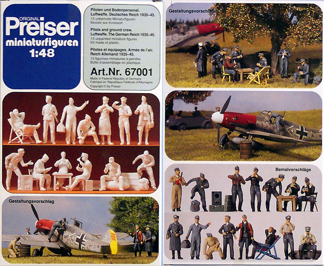
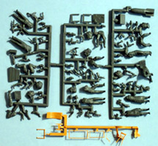
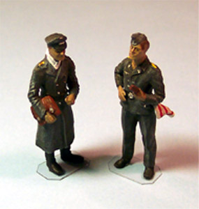
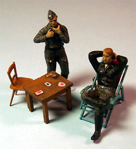

{kind=link}


Preiser 1/48 Luftwaffe Figure Set

Kit #67001 $9.34
Images and text Copyright � 2004 by Matt Swan
This site is dedicated to the building of model aircraft but what are the aircraft without the brave men who flew them? I like to display my models with crew in place or moving about the scene with the models but many kits do not include figures or may include figures that are not appropriate for what I want or are just plain crappy. There are many companies out there that provide a wide range of plastic and metal figures but these tend to be somewhat pricey. Here I want to look at an unlikely source for a good selection of 1/48 scale figures at an exceptional price � Preiser.
Preiser is a German company that actually specializes in accessory pieces for fans of model railroading. In the world of model railroad �O� scale trains are pretty darn close to 1/48 scale and many pieces are right on the spot for scale. This is the case with this package of figures. They are listed as 1/48 scale and include fifteen individual figures, a nice lawn chair, a straight ladder-back chair, a toolbox, a large field radio and some other nifty stuff. All of the figures come in pieces with separate arms (36), heads and in some cases separate legs. Also included are some extra heads (22) and arms giving you, the modeler, even more positioning options. All of the figures and accessory pieces show little flash, faint mold separation lines and very good detail. The plastic is of a good quality, not too brittle or too soft. The inside of the box has printed instructions to aid with the assembly of the figure but you really have to cut the box apart to see the instructions well. If you plan on building all fifteen figures in one sitting then this is no problem, otherwise you�ll need to find alternative storage for the unbuilt figures.
  
The picture above and left links to a larger image if you want to click on it for a better view of the individual parts. The other pictures are just a few of the competed figures. I bought this set through Reynaulds Euro-Imports and with the six dollar shipping cost (if you don�t order anything else) it still comes out to just over a dollar a figure. There is no other package of figures, metal or plastic that I have seen that will give you this kind of value. I give the Preiser Luftwaffe figure set high marks and recommend it for your diorama building needs.